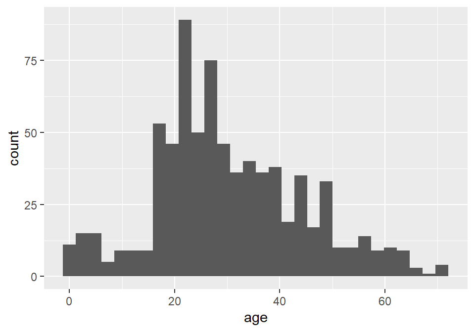
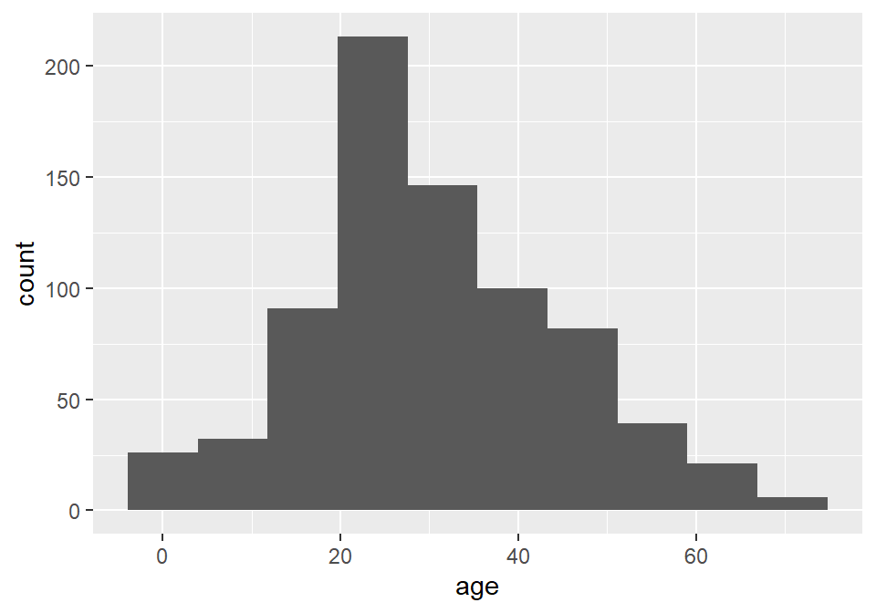
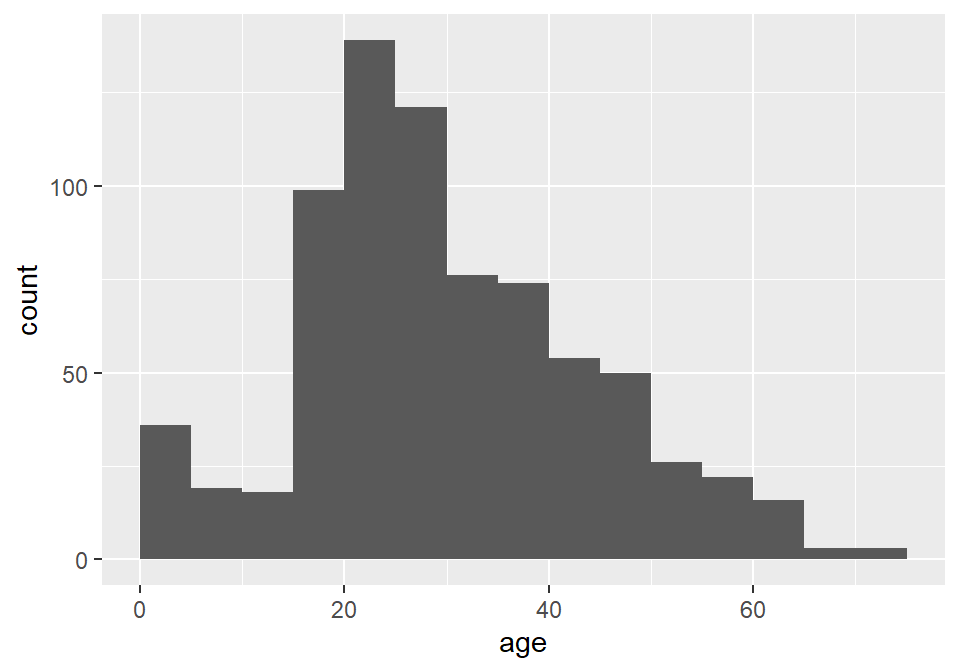
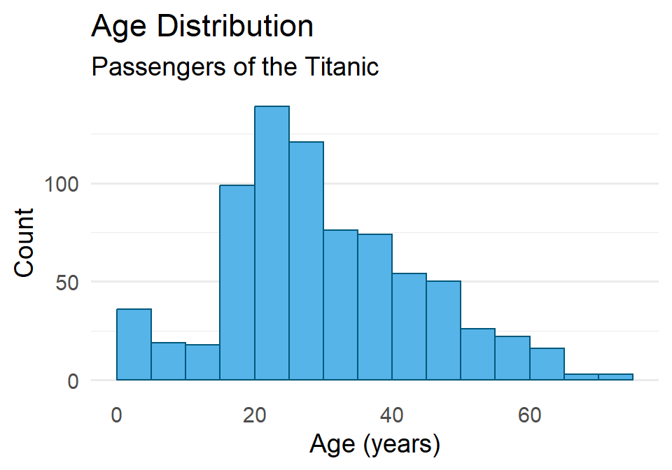
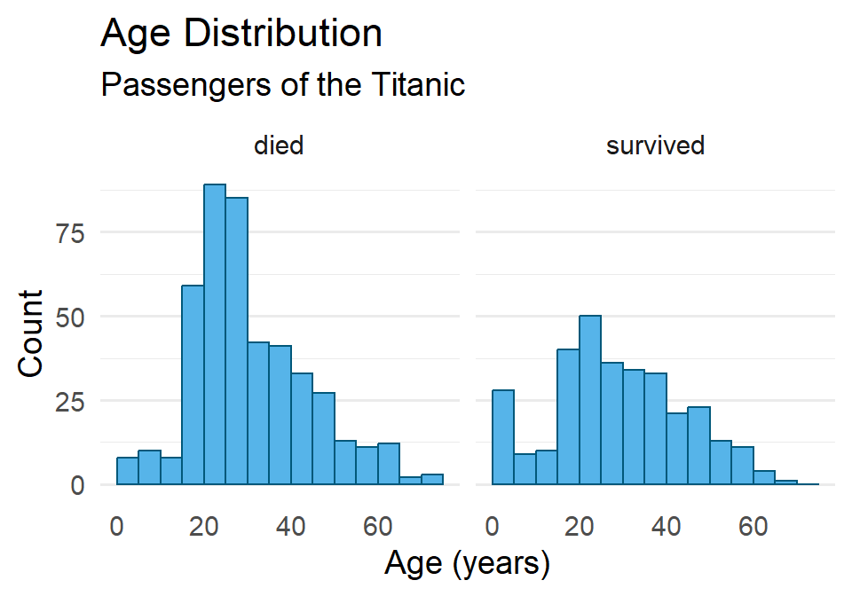

Lab 03: Statistical Inference
Outline
Objectives
This lab will guide you through the process of
- making a tidy data.frame
- visualizing distributions with histograms
- running a t-test
- performing an ANOVA
R Packages
Make sure to load these into your R session with library(). This should always go at the start of your document!
Data
-
penguins- Includes measurements for penguin species, island in Palmer Archipelago, size (flipper length, body mass, bill dimensions), and sex.
- package:
palmerpenguins - reference: https://allisonhorst.github.io/palmerpenguins/reference/penguins.html
-
DartPoints- Includes measurements of 91 Archaic dart points recovered during surface surveys at Fort Hood, Texas.
- package:
archdata - reference: https://cran.r-project.org/web/packages/archdata/archdata.pdf
-
titanic- Provides information on the fate of passengers of the Titanic, including economic status, sex, age, and survival.
- package: none
- reference: https://wilkelab.org/SDS375/
- note: we’re going to download this one rather than get it from a package
-
Snodgrass- Includes measurements of size, location, and contents of 91 pit houses at the Snodgrass site in Butler County, Missouri.
- reference: https://cran.r-project.org/web/packages/archdata/archdata.pdf
Data Frames

Consider this research scenario: you have a museum collection of projectile points that you want to use for an analysis, maybe you want to know whether East Gate and Rose Spring points are actually the same type of point, commonly referred to using the portmanteau Rosegate. Following tradition, you think maybe it’s the size and shape that will you help finally put this old question to rest, so for each individual point, you set about measuring its length, width, and height.
In this course, we’ll refer to each individual measure that you make as a value, each set of such measures for an individual point we will call (somewhat awkwardly) an observation, and each individual type of measurement will be a variable. It is almost certainly the case that you will be collecting this data and storing it in something like a spreadsheet or table, like that shown in Figure 1. You will sometimes hear data scientists refer to data stored in this way as rectangular data. All they mean by that is that the data come as collections of values organized into rows and columns of equal length. While data may admit of many different ways of being organized into rows and columns, here we will focus on a rectangular format known as tidy data. As defined by Hadley Wickham in R for Data Science (2e), tidy data must follow three simple rules:
- Each variable must have its own column,
- Each observation must have its own row, and
- Each value must have its own cell.
It is important to note, as Wickham cautions, that the opposite of tidy data is not necessarily messy data, for data can come in many formats (sound and video, for example). However, when we want to conduct some statistical analysis, and especially when we want to conduct such an analysis in R, we will almost certainly want our data to be tidy.
Creating tables
In R, tabular datasets are known as data frames. To create a data frame, we use the eponymous data.frame() function. Here, for example, is how we would create the table in Figure 1 above:
projectiles <- data.frame(
type = c("Elko", "Rosegate", "DSN", "Elko", "Clovis"),
length = c(2.03, 1.4, 1.9, 2.1, 3.3),
width = c(0.8, 0.4, 0.3, 0.7, 0.95),
height = c(3.23, 2.4, 1.29, 2.7, 4.15)
)
projectiles type length width height
1 Elko 2.03 0.80 3.23
2 Rosegate 1.40 0.40 2.40
3 DSN 1.90 0.30 1.29
4 Elko 2.10 0.70 2.70
5 Clovis 3.30 0.95 4.15Note that the values (or measurements) contained in each variable are wrapped in the c() function (short for concatenate). This variable tells R that all these values belong to this one variable. Each variable in turn is an argument to data.frame() having the form <variable> = c(<value-1>, <value-2>, ..., <value-n>).
Getting basic meta-data from tables
When you want to know what variables a table includes, you can use the names() function.
names(projectiles)[1] "type" "length" "width" "height"If you want to know how many variables or observations the table has, you can use nrow() and ncol() respectively.
Exercises
- Get the names of the variables in the
penguinstable withnames(). - How many observations and variables are in this dataset? Hint: use
nrow()andncol(). - Extract the
bill_length_mmvariable from this table and assign it to an object calledbill_length. Do the same forbill_depth_mmand call itbill_depth. You can use either<table>[[<variable>]]or<table>$<variable>.
Histograms
A histogram is an excellent aid for visualizing the distribution of numerical data. Making one involves “binning” a continuous variable, counting the number of its values that fall into each bin, then drawing a rectangle for each bin whose height is proportional to the count for that bin. A good example of this is the distribution of a population over age ranges, like the age distribution of the passengers on the ill-fated voyage of the Titanic. Before we get to what the histogram looks like for this macabre example, let’s first have a look at the raw data:1
1 These data come from Claus Wilke’s Fundamentals of Data Visualization.
To be able to work through the examples in this section, you need to run the code below. We’ll explain what this code does in another lab.
titanic <- read.csv("https://raw.githubusercontent.com/wilkelab/SDS375/master/datasets/titanic.csv")head(titanic) class age sex survived
1 1st 29.00 female survived
2 1st 2.00 female died
3 1st 30.00 male died
4 1st 25.00 female died
5 1st 0.92 male survived
6 1st 47.00 male survivedYou see that our data has an age for each individual passenger. If we bin those ages into 5 year intervals (0-5, 5-10, 10-15, and so on) and count the number of passengers that fall into each bin or age range, we get a summary table that looks like this.
| Age Range | Count | Age Range | Count | |
|---|---|---|---|---|
We can actually visualize this distribution with a histogram using ggplot() and geom_histogram(). Importantly, we pass ggplot() the raw tidy data, not the summary table. Here is how that looks:
ggplot(titanic) +
geom_histogram(
aes(age)
)`stat_bin()` using `bins = 30`. Pick better value with `binwidth`.
Notice that ggplot2 provides an informative message that the default number of bins used in this plot is 30, which makes the age interval for each bin about 2.5 years. We can (and SHOULD!) change this by specifying a different number of bins with bins, as the number of bins can dramatically change the interpretation of the distribution.
ggplot(titanic) +
geom_histogram(
aes(age),
bins = 10
)
Unfortunately, the default histogram produced by ggplot2 doesn’t do a great job of conveying the relationship between the axis text and the ranges represented by the widths of the rectangles. For instance, zero falls at the center of the first histogram, which would seem to suggest that the range of values represented by that rectangle includes negative ages. What it is really saying is that zero falls in the range of that bin, but that is not obvious. One solution to this issue is to set the binwidth (or bin width, as in the range of values for that bin) and the bin boundary (or where the left side of the rectangle is positioned relative to the bin range). That’s a tad confusing, I know, but the basic idea is that if you set the width to 5 and the boundary to 0, then the bin for the range 0-5 will start at 0, and the bin for the range 5-10 will start at 5, and the bin for 10-15 will start at 10, and so on. Finding the best options for visualizing your data will, of course, involve some trial and error.
ggplot(titanic) +
geom_histogram(
aes(age),
binwidth = 5,
boundary = 0
)
As always, you can change the fill and outline color for these plots by supplying those parameters to the geometry. We can also clean up the labels with labs() and change the theme if we like (and we do). And since the heights of these bars are what we care about, we can turn off the light vertical grid lines that ggplot2 adds by default by specifying this as a theme() option.
ggplot(titanic) +
geom_histogram(
aes(age),
binwidth = 5,
boundary = 0,
fill = "#56B4E9",
color = "#01587A"
) +
labs(
x = "Age (years)",
y = "Count",
title = "Age Distribution",
subtitle = "Passengers of the Titanic"
) +
theme_minimal(14) +
theme(
panel.grid.major.x = element_blank(),
panel.grid.minor.x = element_blank()
)
One last point before moving on. You may have noticed that the data contains a binary variable survived. Do you think maybe the age distribution of those that survived differs from the distribution for those that did not survive? Do you think maybe they were older? Younger? Or is there no difference? Let’s explore this a little by visualizing the different distributions using facet_wrap().
ggplot(titanic) +
geom_histogram(
aes(age),
binwidth = 5,
boundary = 0,
fill = "#56B4E9",
color = "#01587A"
) +
labs(
x = "Age (years)",
y = "Count",
title = "Age Distribution",
subtitle = "Passengers of the Titanic"
) +
facet_wrap(vars(survived)) + # <----- adding facets here
theme_minimal(14) +
theme(
panel.grid.major.x = element_blank(),
panel.grid.minor.x = element_blank()
)
Hmmmm 🤔. What do you think this means? And how might it help to compare this to the total distribution?
Exercises
- Create a histogram of penguin bill length using the
penguinsdataset. Then do all of the following:- Change the number of bins (try two different options).
- Try specifying the bin width and boundary.
- Change the fill and outline color.
- Reset the labels to be more informative.
- Change the theme and remove the vertical grid lines.
- Facet the distributions by penguin species.
- Repeat (1), but use the
DartPointsdataset from thearchdatapackage, creating a histogram of dart length (Lengthin the table) and facet by dart type (Name).- Does it look like the dart types might differ in length? Or maybe they’re all basically the same?
t-test
We use a t-test (technically, Welch’s two-sample t-test) to evaluate whether two samples come from the same population. This test starts by computing the \(t\) statistic, or the standardized difference in sample means:
\[t = \frac{\bar{x}_1 - \bar{x}_2}{s_{\bar{x}}}\]
where \(s_{\bar{x}}\) is the standard error of the sample mean. This is then compared to a t-distribution to determine the probability of that difference - the more improbable, the less likely the samples come from the same distribution. Why is that? Well, if you think about it, we are starting from the assumption that the null hypothesis is true. Then we are asking, if the null hypothesis is true, how likely is that we would get this difference in sample means? And, if it’s extremely unlikely, that would presumably count against the null model being true.
To perform this test in R, we use the t.test() function, providing it with two samples. Suppose, for example, that we have two samples of projectile points, namely their lengths in millimeters, and we want to answer this question: Are these samples of the same point type (the same population)? Here are our two samples:
sample1 <- c(59.10, 61.97, 56.23, 53.83, 60.24, 44.27, 61.41, 55.07, 55.01, 50.56)
sample2 <- c(58.42, 68.09, 60.85, 61.60, 57.25, 63.08, 58.57, 57.34, 64.60, 60.49)
mean(sample1) - mean(sample2)[1] -5.26Before we run the test, let’s make sure we have our hypotheses clear.
- \(H_0\): There is NO difference in mean length (\(\bar{x}_1 = \bar{x}_2\))
- \(H_1\): There is a difference in mean length (\(\bar{x}_1 \neq \bar{x}_2\))
We also need to specify our critical value. Here, we’ll stick with a common standard of 0.05:
- \(\alpha = 0.05\)
Now, we can run our test!
t.test(sample1, sample2)
Welch Two Sample t-test
data: sample1 and sample2
t = -3, df = 15, p-value = 0.02
alternative hypothesis: true difference in means is not equal to 0
95 percent confidence interval:
-9.598 -0.922
sample estimates:
mean of x mean of y
55.8 61.0 Notice the output that R has provided here. You have the name of the test: Welch Two Sample t-test (this is a version of Student’s t-test for two independent samples). It gives you the t-statistic, the degrees of freedom (df), and the p-value. It also states the alternative hypothesis and gives you the mean of each sample. In this case, \(p < \alpha\). Hence, we reject the null. A significant difference exists between the means of these two samples.
If your samples are in a data.frame, you can also call t.test() using R’s formula syntax. So, assume your data above are in a table like so:
n <- length(sample1)
samples <- data.frame(
sample = c(rep(1, n), rep(2, n)),
length = c(sample1, sample2)
)
head(samples) sample length
1 1 59.1
2 1 62.0
3 1 56.2
4 1 53.8
5 1 60.2
6 1 44.3Then you would run the t.test() this way:
t.test(length ~ sample, data = samples)
Welch Two Sample t-test
data: length by sample
t = -3, df = 15, p-value = 0.02
alternative hypothesis: true difference in means between group 1 and group 2 is not equal to 0
95 percent confidence interval:
-9.598 -0.922
sample estimates:
mean in group 1 mean in group 2
55.8 61.0 The formula in this example is length ~ sample. The tilde expresses a relation of dependence. In this case, we want to know whether the length of a point differs in some meaningful way between samples. So, here we are, in effect, asking R to run a t-test comparing the mean length in each sample using the samples dataset. You will notice that the results are the same, we just called the function in a slightly different way because of how we had the data stored.
Exercises
- Perform a t-test on these two samples of dart length (drawn from the
DartPointsdataset).- Calculate the mean for each sample.
- Be sure to specify the null and alternate hypotheses.
- State the critical value.
- Run the test and print the results.
- Calculate the mean for each sample.
- Based on the test, do you accept or reject the null hypothesis? Why?
ANOVA
Like the t-test, the ANOVA is used to test for a difference between samples, to see whether they come from the same population. Unlike the t-test, however, the ANOVA can be used on more than two samples. It does that by decomposing the total variance into within and between group variance. The ratio of those standardized variances defines the F-statistic:
\[F = \frac{\text{between-group variance}}{\text{within-group variance}}\]
By comparing the value of \(F\) to the F-distribution, we can evaluate the probability of getting that value. A highly improbable F-statistic means that at least one group or sample comes from a different population. To perform this test in R, we use the aov() function.
To illustrate this method, let’s return to the DartPoints dataset, which contains various measures for five different dart point types (Darl, Ensor, Pedernales, Travis, and Wells). We’ll try to answer the question: Are these samples from the same dart point type (the same population)? Less formally, we want to know whether the types we have lumped these darts into are really all that different. As always, we first specify our null and alternate hypotheses and the critical value we will use to determine whether to reject the null.
- \(H_0\): There is no difference in length between groups.
- \(H_1\): At least one group differs in length.
And our critical value, again, will be 0.05.
- \(\alpha = 0.05\)
Now, we can conduct our test.
There are two things to note here. First, we are assigning the output of this ANOVA test to an object. Second, we call the test using a formula, in this case Length ~ Name. The full call to aov() you can read as saying, “Perform an analysis of variance comparing the lengths for each sample in this dataset.”
ANOVA Table
If we print out the result of the aov() call, it looks like this:
aov_testCall:
aov(formula = Length ~ Name, data = DartPoints)
Terms:
Name Residuals
Sum of Squares 5532 9067
Deg. of Freedom 4 86
Residual standard error: 10.3
Estimated effects may be unbalancedWhile this printout offers some important information, a much more useful ummary of the test is provided by an ANOVA table. We can generate one of these by running the summary() function on our test.
summary(aov_test) Df Sum Sq Mean Sq F value Pr(>F)
Name 4 5532 1383 13.1 0.000000022 ***
Residuals 86 9067 105
---
Signif. codes: 0 '***' 0.001 '**' 0.01 '*' 0.05 '.' 0.1 ' ' 1This table has two rows, one for the between-group variance and one for the within-group variance respectively. As you can see, R refers to these, somewhat cryptically, as the Name (the grouping variable in the data) and Residuals. The reason for this concerns the fact that the aov() function is actually fitting a linear model, but let’s leave that detail to the side. For now, just note that the columns are, in order,
-
Df= the degrees of freedom,
-
Sum Sq= the sum of squares,
-
Mean Sq= the mean sum of squares (the sum of squares divided by the degrees of freedom),
-
F value= the F-statistic (the ratio of the mean sum of squares), and
-
Pr(>F)= the p-value, formally the probability of getting a value of the statistic greater than observed (determined by comparing the F-statistic to the F-distribution).
In this case, \(p < \alpha\), so we reject the null hypothesis, meaning that at least one of these groups is different.
Exercises
- Perform an ANOVA on the
DartPointsdataset to see if at least one dart type differs signficantly in itsWidth.- Be sure to specify the null and alternate hypotheses.
- State the critical value.
- Run the test and print the results.
- Be sure to assign the test to an object.
- Provide a
summary()of the test.
- Based on the test, do you accept or reject the null hypothesis? Why?
Homework
- Load the
Snodgrassdataset from thearchdatapackage usingdata(Snodgrass). This dataset includes measurements of pithouses found in a small village affiliated with maize farmers in Missouri about 650 years ago. - Generate a summary table using the
skim()function fromskimr. - For practice, let’s get some of those summary statistics manually. Calculate the mean and standard deviation of the inside floor area of each pithouse using
mean()andsd(). You’ll need to pull theAreavariable out of the table withSnodgrass$Area. Hint: if you were to calculate the variance, you would usevar(Snodgrass$Area). - Use
ggplot()andgeom_histogram()to plot a histogram showing the distribution of floor area. Make sure to do all of the following (only need to make one graph):- Change the default number of bins (or optionally, you can specify the breaks).
- Change the fill and outline color.
- Update the labels and the plot title.
- Choose an appropriate theme and remove the vertical grid lines.
- Facet by the
Insidevariable. Then try faceting using theSegmentvariable. - Do the distributions look different?
- Some of these pithouses occur inside a walled-in portion of the village. This information is provided by the
Insidevariable in the dataset. Run a t-test to determine whether the mean floor area of pithouses inside the walled-in area differs significantly from the mean floor area of pithouses outside the wall.- These data are in a table, so make sure to use the formula notation.
- State the null and alternative hypotheses.
- Specify the critical value.
- Run the test and print the result.
- Does the test confirm or refute the null hypothesis? Why?
- How would you interpret this result?
- The pithouses were initially divided into three groups or “segments” (
Segmentin the table) based on their location: segment one includes those inside the wall, segment two those to the north and west of the wall, and segment three those to the east and south of the wall. Run an ANOVA test to determine whether mean floor area for these groups is significantly different.- State the null and alternative hypotheses.
- Specify the critical value.
- Run the test and print the result.
- Be sure to assign the result to an object.
- Provide a
summary()of the test. - Does the test confirm or refute the null hypothesis? Why?
- How would you interpret this result?